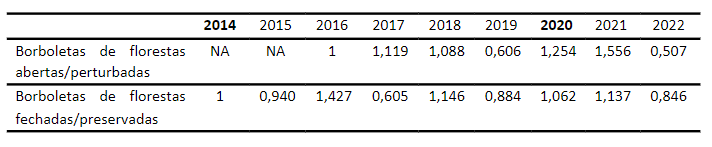
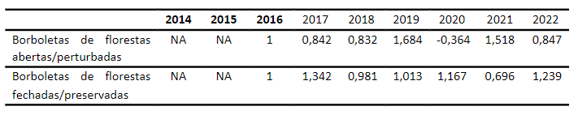
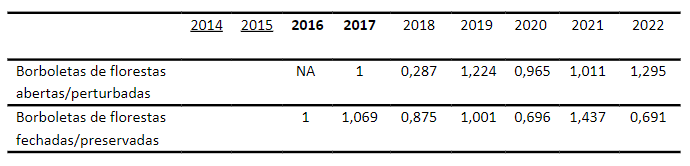
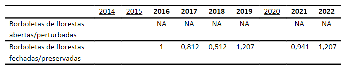
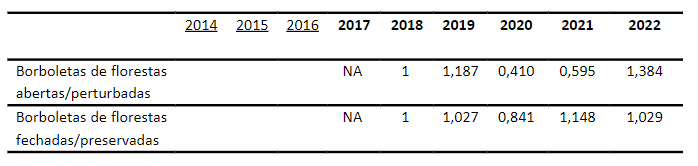
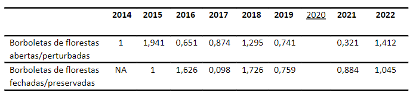
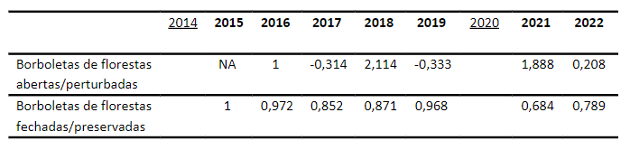

4 Borboletas frugívoras
Isabela Freitas Oliveira1-2 & Onildo João Marini Filho1
Centro Nacional de Pesquisa e Conservação da Biodiversidade do Cerrado e Restauração Ecológica - CBC
Instituto Chico Mendes de Conservação da Biodiversidade – ICMBio
Parque Nacional de Brasília
Via Epia, BR-450, Km 8,5
70635-800 Brasília, DFCoordenação de Monitoramento da Biodiversidade - COMOB
Instituto Chico Mendes de Conservação da Biodiversidade – ICMBio
Complexo Administrativo EQSW 103/104 s/n
70670-350 Brasília, DF
Em alguns grupos de insetos, a variação na riqueza, abundância e composição de espécies das comunidades ao longo do tempo vem sendo utilizada como indicador de alteração ambiental ([1], [2], [3]). No caso de borboletas, além desses parâmetros, a frequência relativa de ocorrência em nível de tribo também tem sido usada em estudos pontuais e programas de monitoramento ([4]). Esse indicador está relacionado tanto a alterações na vegetação ([5], [6]) e eventos extremos climáticos, quanto a mudanças menos perceptíveis, como a redução na qualidade do ar (especialmente devido à presença de agrotóxicos) ([7], [8]) e variações graduais do clima (temperatura e umidade) ([9]).
4.1 Implementação e validação protocolar
De 2014 a 2022 o protocolo amostral de borboletas frugívoras foi aplicado de forma integral ou parcial em 50 UCs federais, totalizando 134 estações amostrais (EAs) e 536 unidades amostrais (UAs - transecções com quatro armadilhas atrativas do tipo Van Someren-Rydon). A maior parte das amostragens (39 UCs, 78%) foi realizada no bioma Amazônico, seis UCs (12%) foram amostradas na Mata Atlântica e cinco UCs (10%) no Cerrado. Até 2022, das 50 UCs federais com coleta de dados de borboletas frugívoras, 31 (62%) já estão consolidadas com as três EAs e 12 UAs implantadas (Tabela X). Estas UCs são: ESEC da Terra do Meio, ESEC de Maracá, ESEC do Jari, FLONA de Tapajós, FLONA do Jamari, PARNA da Amazônia, PARNA da Serra da Cutia, PARNA da Serra do Divisor, PARNA de Pacaás Novos, PARNA do Cabo Orange, PARNA do Jaú, PARNA do Juruena, PARNA do Superagui, PARNA dos Campos Amazônicos, PARNA Mapinguari, PARNA Montanhas do Tumucumaque, PARNA Nascentes do Lago Jari, REBIO do Gurupi, REBIO do Jaru, REBIO do Tapirapé, REBIO do Uatumã, RESEX Arapixi, RESEX Barreiro das Antas, RESEX Chico Mendes, RESEX do Alto Tarauacá, RESEX do Cazumbá-Iracema, RESEX do Rio do Cautário, RESEX Renascer, RESEX Rio Ouro Preto, RESEX Riozinho da Liberdade e RESEX Tapajós-Arapiuns (Cap. 2, Tabela xx).
A partir de xxxx, xx UCs (XX%) adotaram o Open Data Kit (ODK), um aplicativo Android de código aberto que possibilita a coleta de dados em campo de forma mais eficiente e confiável, substituindo os formulários em papel. Ele armazena diversos tipos de informação como textos, dados numéricos, coordenadas geográficas, áudio, imagens, vídeo e códigos de barras, sendo projetado para funcionar mesmo sem conectividade à internet. O ODK favorece o registro de armadilhas com zero capturas, informação muitas vezes desconsiderada quando a amostragem é feita com formulários tradicionais. Além disso, só é possível adicionar as fotos das borboletas no sistema quando as coordenadas da unidade amostral de cada EA são registradas, certificando que a coleta foi, de fato, feita no local correto. Com as fotos das borboletas no sistema, especialistas podem identificar os indivíduos em nível de espécie ou morfoespécie, possibilitando a análise dos dados de acordo com o protocolo avançado.
Conforme mencionado no capítulo 2, as amostragens de borboleta frugívoras foram paralisadas ou reduzidas no período mais intenso da pandemia de COVID (2020-21). Em 2020, 13 UCs fizeram coletas, porém, somente o PARNA da Amazônia, PARNA Serra da Cutia, PARNA de Pacaás Novos, PARNA Mapinguari, REBIO do Uatumã e RESEX Barreiro das Antas coletaram nas três EAs. Em 2021, as atividades foram retomadas em 31 UCs (Figura 4.1 e Figura 4.2).
Ao longo dos anos, houve uma progressão no número de UCs e EAs amostradas (exceto em 2020). Em 2022, a amostragem de borboletas frugívoras foi realizada em 39 das 50 UCs do Programa Monitora – Protocolo de Borboletas frugívoras, nos três biomas florestais (Tabela x). O ano de 2022 teve oito UCs a mais do que 2021, com um aumento de 35.4% no número de EAs implementadas (Figura 4.1).
Para verificar se as amostragens de borboletas frugívoras nas UCs da Amazônia seguiram o protocolo de coleta adequadamente, os dados foram submetidos a um script em R para validação automatizada das campanhas realizadas. Três regras de validação do protocolo foram aplicadas às EAs em cada campanha: (1) A amostragem ter sido realizada no período do ano correto para a região, (2) terem sido realizados seis dias de amostragem e (3) ter sido respeitado o intervalo mínimo de 15 dias entre campanhas. Todos os 846 registros (estação amostral de uma UC por campanha por ano) foram avaliados. Dessas, 230 (27%) violaram alguma regra do protocolo. Seis registros violaram duas regras, sendo estas expedições para locais de difícil acesso (i.e., PARNA do Monte Roraima). Em apenas um registro (EA-4 do PARNA Mapinguari na segunda campanha de 2022) as três regras foram violadas. A coleta fora do período indicado para a região correspondeu a 85% das violações. O número correto de dias de amostragem por campanha não foi cumprido em 13% das EAs, havendo tanto EAs com mais quanto com menos dias de coleta. O intervalo mínimo de 15 dias entre campanhas não foi respeitado em 7% das EAs.
O esforço amostral de borboletas frugívoras vem aumentando desde o início da implementação do Programa Monitora (exceto em 2020). Em relação a 2014, o ano de 2015 apresentou um aumento de 121% no esforço amostral. Em 2016, houve um aumento de 134%, em 2017 o esforço aumentou 67%, em 2018 houve um crescimento de 43% e em 2019 o aumento foi de 23%. Em 2020, ano com maior impacto da pandemia, houve uma queda de 74% em relação ao ano anterior. No entanto, em 2021 o esforço amostral cresceu 234%, e em 2022 o aumento foi de 36% (Figura 4.2).
De maneira geral, observou-se que o número de indivíduos amostrados acompanhou o esforço amostral, havendo um aumento na abundância de borboletas com o aumento do esforço amostral (Figura 4.2). Ao todo, foram capturados 85.386 indivíduos de borboletas, com um esforço amostral de 90.320 armadilhas/dia (Figura 4.2).

4.2 Resultados
Após a correção, limpeza e validação dos dados foram contabilizadas 85.386 borboletas frugívoras capturadas de 2014 a 2022. Desse total, 915 indivíduos (1%) foram registrados como ‘NA’ em sua tribo, sem a chance de verificação por falta de fotografias. Outras 604 borboletas (0.8%), registradas como recapturas, foram desconsideradas na contagem. Na Amazônia, foram capturados 76.309 indivíduos, no Cerrado 6.378 e na Mata Atlântica 2.700 indivíduos.
4.2.1 Regiões climáticas
Os períodos de amostragem propostos no protocolo do Programa Monitora para borboletas frugívoras na Amazônia seguem a mesma lógica aplicada para as regiões Central e Sudeste do Brasil, onde há alta abundância populacional e maior diversidade de espécies de borboletas frugívoras no final do período de chuvas intensas ([10]). Os períodos de amostragem para as regiões amazônicas apresentados a seguir baseiam-se na caracterização climática associada ao padrão de chuvas em toda a Amazônia (conforme [11]). Com base na identificação dos padrões de chuva em cada região, foram definidas seis regiões climáticas que englobam as Unidades de Conservação participantes do Programa Monitora (Figura 4.3). As regiões climáticas são: Central, Sudoeste, Leste, Sudeste, Norte e Noroeste. Isso permite determinar o período mais adequado para a amostragem (Tabela x), considerando que o regime de chuvas é uma característica regional relevante para as borboletas frugívoras (referência).
O número de UCs e EAs amostradas varia bastante entre as regiões (Figura 4.3). Atualmente, nenhuma UC da região Noroeste da Amazônia participa do Programa Monitora aplicando o protocolo de borboletas frugívoras. No entanto, seria de extrema importância implementar esse protocolo em pelo menos três UCs nessa região: ESEC Juami-Japurá, PARNA do Pico da Neblina e RESEX Auatí-Paraná.
O número de UCs e EAs amostradas varia bastante entre as regiões (Figura 4.3). Atualmente, nenhuma UC da região Noroeste da Amazônia participa do Programa Monitora aplicando o protocolo de borboletas frugívoras. No entanto, seria de extrema importância implementar esse protocolo em pelo menos três UCs nessa região: ESEC Juami-Japurá, PARNA do Pico da Neblina e RESEX Auatí-Paraná. Outra região climática em que se faz necessária a inclusão de mais UCs para o protocolo de borboletas frugívoras é a sudeste amazônica. Esta região é de extrema importância por abrigar uma rica diversidade de espécies e estar constantemente ameaçada pelo agronegócio e mineração. Sugere-se a inclusão da ESEC Iquê, REBIO Nascentes da Serra do Cachimbo, FLONA Jamanxim, PARNA Rio Novo e FLONA de Carajás. Além dessas regiões, é importante também a inclusão de UCs mais ao norte da região climática sudoeste. Assim, sugere-se a inclusão de UCs no médio e baixo rio Juruá, como as RESEX Médio Juruá, Baixo Juruá e FLONA de Tefé.

Tabela x. Localização das UCs em relação às regiões climáticas da Amazônia, incluindo o período sugerido de amostragens de borboletas indicado como o final das chuvas. As UCs com * situam-se entre duas ou mais regiões climáticas (q. = quinzena). As UCs marcadas com # ainda não iniciaram a amostragem de borboletas.
De 2014 a 2022 as amostragens de borboletas frugívoras na região climática central amazônica foram realizadas em 41 EAs em 12 UCs (Figura 4.4): ESEC da Terra do Meio, FLONA de Tapajós, PARNA da Amazônia, PARNA dos Campos Amazônicos, PARNA do Jaú, PARNA Nascentes do Lago Jari, REBIO do Jaru, REBIO do Uatumã, RESEX do Lago do Capanã Grande, RESEX Riozinho do Anfrísio, RESEX Tapajós-Arapiuns e RESEX Verde para Sempre.
O sudoeste amazônico foi a região com o maior número de UCs aplicando o protocolo de borboletas no período de 2014 a 2022, com 14 UCs amostradas: ESEC Rio Acre, FLONA do Jamari, PARNA da Serra da Cutia, PARNA da Serra do Divisor, PARNA de Pacaás Novos, PARNA Mapinguari, RESEX Arapixi, RESEX Barreiro das Antas, RESEX Chico Mendes, RESEX do Alto Tarauacá, RESEX do Cazumbá-Iracema, RESEX do Rio do Cautário, RESEX Rio Ouro Preto e RESEX Riozinho da Liberdade. Nesta região, as coletas foram realizadas em 44 EAs (Figura 4.4).
Na região leste amazônica, as amostragens se iniciaram em 2016. Até 2022, seis UCs e 17 EAs foram amostradas (Figura 4.4): ESEC do Jari, PARNA do Cabo Orange, PARNA Montanhas do Tumucumaque, REBIO do Gurupi, RESEX Ipaú-Anilzinho e RESEX Renascer.
Na região sudeste amazônica, as amostragens de borboletas frugívoras também se iniciaram em 2016 e ocorreram em seis EAs, contemplando apenas duas UCs: PARNA do Juruena e REBIO do Tapirapé.
Finalmente, na região norte da Amazônia, a aplicação do protocolo de borboletas frugívoras se iniciou em 2017, com cinco UCs e nove EAs amostradas até 2022 (Figura 4.4): ESEC de Maracá, ESEC de Niquiá, PARNA da Serra da Mocidade, PARNA do Monte Roraima e PARNA do Viruá.

Para que os dados e informações neste relatório possam ser interpretados de forma adequada e com maior confiabilidade, foi estabelecido um esforço amostral mínimo para os biomas. Para cada região Amazônica, foi considerado o esforço amostral de 1.728 armadilhas/dia. Isso significa pelo menos três UCs consolidadas (i.e., 9 EAs) em que tenham sido executadas as duas campanhas (6 dias cada) no ano.
4.3 Assinatura das tribos de borboletas ao longo dos anos
A assinatura de tribos de borboletas é uma forma gráfica de representar as proporções das tribos de borboletas de uma determinada comunidade presente naquele ano ou local. Ela se torna efetiva quando comparada em longo prazo ou entre locais. Com a assinatura de borboletas, detectam-se tribos mais representativas naquela comunidade amostrada, sendo possível assim, realizar diagnósticos ambientais mais informativos para aquela região ou ano.
A abordagem que vem sendo utilizada no Programa Monitora considera a existência de um gradiente na associação entre as tribos de borboletas frugívoras e a estrutura das formações florestais, variando das florestas mais alteradas e/ou abertas até florestas mais adensadas e fechadas. O protocolo adotado pelo grupo de especialistas em borboletas considera que as tribos registradas estão relacionadas aos seguintes tipos de ambientes:
florestas fechadas/conservadas: Brassolini, Haeterini e Morphini. Em situações de perturbação da floresta a abundância relativa dessas tribos diminui consistentemente;
florestas abertas/alteradas (com abertura significativa no dossel): Ageroniini, Callicorini e Biblidini. As espécies dessas tribos são favorecidas por alterações na estrutura da floresta e suas abundâncias aumentam consistentemente com perturbações locais.
As tribos Preponini, Melanitini, Anaeini, Epicaliini, Epiphilini, Coeini e Satyrini não apresentam associação clara com ambientes florestais ou não demonstram tendência definida. A abundância dessas tribos pode aumentar ou diminuir em resposta a perturbações da floresta, como abertura de clareiras ou eventuais alterações no dossel.
Embora ainda pouco disseminada em trabalhos acadêmicos, a assinatura de tribos de borboletas tem um papel importante em relatórios técnicos de iniciativas de monitoramento de fauna. É uma maneira viável de analisar e apresentar dados de um grupo com grande riqueza de espécies de uma região megadiversa, amostrado em uma escala tão ampla como o Brasil.
4.3.1 Amazônia
Na região climática central amazônica 25.481 borboletas frugívoras foram amostradas de 2014 a 2022. Visto que 174 não foram identificadas em nível de tribo, 25.307 indivíduos foram considerados nas análises. Desses, 43% pertencem à tribo Satyrini, a mais abundante da região, seguidos por 16% de Brassolini e 9% de Coeini. Os anos 2014 e 2020 tiveram um esforço amostral inferior àquele definido como mínimo aceitável para a região. Assim, a interpretação dos resultados nesses anos deve ser feita com cautela.
As tribos Satyrini e Brassolini foram predominantes em praticamente todos os anos amostrados na região climática central amazônica. No entanto, em 2017 houve um aumento no número de Coeini, que foi a segunda tribo mais abundante (Figura 4.5.1). As tribos indicadoras de áreas abertas/perturbadas tiveram baixíssima representação. Porém, essas tribos tiveram um aumento no número de indivíduos em 2021 (Figura 4.5).

Na região climática sudoeste amazônica, foram amostradaos 34.525 indivíduos de borboletas frugívoras, 354 delas não identificadas e desconsideradas nas análises. Assim, 34.171 indivíduos foram identificados em nível de tribo: 48% Satyrini, 11% Brassolini e 9% Ageroniiini. Apesar de não serem maioria, a região sudoeste apresentou a maior proporção de tribos indicadoras de florestas abertas/perturbadas dentre as regiões da Amazônia. No caso, a tribo Ageroniini foi responsável por esse padrão, especialmente em 2019 (Figura 4.6). É importante salientar que, apesar de Ageroniini ser classificada como uma tribo indicadora de florestas abertas/perturbadas, diversas espécies do gênero Hamadryas (e.g., Hamadryas alicia, Hamadryas belladonna, Hamadryas velutina) e dos gêneros Batesia e Panacea estão geralmente presentes em florestas maduras e bem conservadas. Dessa forma, torna-se ainda mais necessária a aplicação do protocolo avançado nas UCs para que, com as fotografias dos indivíduos, seja possível separar espécies na tribo que utilizam regularmente florestas abertas/perturbadas, como por exemplo Hamadryas februa, Hamadryas feronia, Hamadryas amphinome e Ectima iona, das espécies anteriormente citadas, habitantes de florestas fechadas/preservadas (Jenkins, 1983).
Seguindo os padrões de diversidade da fauna e flora amazônicas, a região sudoeste apresentou os maiores valores de números de indivíduos por esforço amostral. Apesar de tratar-se de contagem de indivíduos, é de se esperar que a riqueza e diversidade de espécies acompanhem este padrão. Somente a partir de 2017 o esforço amostral foi adequado para representar a região.

Na região climática leste amazônica foram amostradas 7.969 borboletas frugívoras, com 67 indivíduos não identificados em nível de tribo. Assim, dos 7.902 indivíduos de borboletas frugívoras identificados na região leste da Amazônia, 46% corresponderam à tribo Satyrini, a mais representativa, seguida por Brassolini (15%) e Morphini (11%). Os anos 2016, 2017 e 2020 tiveram amostragens abaixo do esforço adequado para representar a região.
O padrão da proporção da abundância das tribos foi bastante estável, com pouca variação entre anos ((Figura 4.7).

Ao todo, foram amostrados 5.042 indivíduos de borboletas frugívoras na região sudeste amazônica. Desses, 48 indivíduos foram descartados na análise por não terem sido identificados. Assim, 4.994 borboletas frugívoras foram identificadas em nível de tribo. Dentre as mais abundantes destacaram-se Satyrini (58%), Epicaliini (11%) e Morphini (11%).
Apesar do baixo número de UCs nesta região, o padrão da proporção das tribos ao longo dos anos variou pouco (Figura 4.8).

Na região climática norte amazônica o esforço mínimo para a representação da comunidade de borboletas frugívoras não foi atingido em nenhum ano. Uma das razões é a complexidade logística para a amostragem em algumas UCs do norte da Amazônia. Por exemplo, as amostragens no PARNA do Monte Roraima precisam ser feitas na forma de expedições, devido às dificuldades de acesso através da Terra indígena Raposa Serra do Sol, levando dias por terra ou com um alto custo utilizando aviões monomotores. Outro fator que influenciou a diminuição do número de EAs amostradas foi a invasão da ESEC Maracá por garimpeiros em 2019, com ameaças e roubo de equipamentos da UC. A ESEC Maracá era a única UC consolidada nao região Norte. Assim, é necessário se reestabelecer a amostragem na ESEC Maracá e aumentar o número de EAs implementadas no PARNA da Serra da Mocidade, na ESEC de Niquiá e no PARNA do Viruá.
Ao todo, foram amostradas 3.303 borboletas frugívoras nessa região. Dessas, 190 não foram identificadas em nível de tribo, tendo sido descartadas, de forma que 3.113 indivíduos identificados foram considerados na análise. Dentre as tribos mais abundantes destacam-se Satyrini, Brassolini e Preponini, com 55%, 15% e 6%, respectivamente.
O padrão da assinatura das tribos nos anos não variou drasticamente. Porém, o número de indivíduos foi bastante influenciado pelo número de estações amostrais (Figura 4.9).

4.3.2 Cerrado e Mata Atlântica
Até o momento, poucas UCs dos biomas Cerrado e Mata Atlântica aplicaram o protocolo de amostragem de borboletas frugívoras. Dessa forma, os resultados apresentados aqui requerem cautela na interpretação.
No Cerrado foram amostrados 6.378 indivíduos (67 deles não identificados em nível de tribo), sendo 6.311 considerados nas análises. As tribos mais representativas no Cerrado foram Satyrini, Ageroniini e Biblidini com 40%, 14% e 8%, respectivamente.
Os padrões anuais apresentaram grandes variações na proporção das tribos indicadoras, especialmente de Brassolini, Morphini, Biblidini e Ageroniini (Figura 4.10).

Na Mata Atlântica 2.700 borboletas frugívoras foram amostradas. Dessas, 16 não foram identificadaos no nível de tribo, de modo que 2.684 indivíduos amostrados foram considerados na análise. A tribo Satyrini foi a mais representativa, com 27% dos indivíduos, seguida por Anaeini, com 24% e Epicaliini, com 14%.
Houve uma grande variação das tribos entre anos, especialmente de Brassolini, Anaeini, Coeini e Satyrini (Figura 4.11). Verificou-se também grande variação no número de indivíduos, mesmo quando com um mesmo esforço amostral, indicando haver de fato diferenças na abundância entre regiões. Assim, é de extrema importância que as amostragens sejam feitas continuamente nas mesmas UCs e que, com a adesão de novas unidades de conservação da região ao programa de monitoramento, as amostragens nas UCs com protocolo de borboletas frugívoras já implementado sejam mantidas.

4.3.3 Índices de abundância de tribos
Para avaliar as flutuações dos índices de abundância ao longo dos anos, foram utilizadas somente as tribos indicadoras de ambientes preservados e perturbados. Dessa forma, foram somados os números de indivíduos das tribos Brassolini, Morphini e Haeterini para cada ano, representando as borboletas indicadoras de ambientes fechados/preservados e o número de indivíduos das tribos Callicorini, Biblidini e Ageroniini, tribos de borboletas de florestas abertas/perturbadas. Os valores de índice de abundância de cada tribo por ano são apresentados no Apêndice xx.
4.3.3.1 Cálculo do índice
O índice de abundância tem como base o número acumulado de indivíduos de cada tribo em cada ano numa dada área. Partindo do número de indivíduos por ano (n), é feita uma correção, somando um número muito pequeno de forma a evitar a presença de zeros na matriz. Desta forma, é obtida a frequência absoluta corrigida (f = n + 0.00001). Em seguida, é calculada a frequência absoluta corrigida pelo esforço amostral (fe) para padronização: fe = f / (número de armadilhas * dias de amostragem). O índice de abundância (i) é calculado através da divisão da fe do ano específico sobre o valor da fe do primeiro ano em que aquela “população” foi registrada. Foi considerada primeira ocorrência quando a abundância da “população” no ano foi ≥ 20 indivíduos. O índice de abundância da primeira ocorrência (i0) é padronizado com o valor 1,0. Considerando que a frequência corrigida apresenta grandes variações de abundância e esforço amostral entre anos, foi feita uma transformação logarítmica (log10 + 1) do índice de abundância. Assim, valores acima de 1,0 indicam um aumento “populacional” referente ao primeiro ano e valores abaixo de 1,0 indicam uma redução “populacional”.
Neste relatório, foram feitas duas abordagens do índice de abundância. O primeiro se refere à flutuação do índice de abundância em relação ao ano anterior. Exemplo do cálculo do índice de abundância no terceiro ano de amostragem:
\[f_{3} = n + 000001\]
\[fe_{3} = f_{3} / \text{esforço} \, \text{anual}\]
\[i_{3} = log_{10} (fe_{3} / fe_{2}) + 1\]
Esta abordagem revela, por exemplo, o quanto a “população” está se ‘recuperando’ de um declínio no ano anterior. Estes valores podem ser encontrados na Tabela 4.1 a Tabela 4.7.
A segunda abordagem segue o princípio do Live Planet Index (LPI), no qual os índices de abundância dos anos amostrados fazem referência ao primeiro ano em que a “população” foi registrada. Esta flutuação “populacional” pode ser vista nas figuras abaixo. Exemplo do cálculo do índice de abundância no terceiro ano de amostragem:
\[f_{3} = n + 000001\]
\[fe_{3} = f_{3} / \text{esforço} \, \text{anual}\]
\[i_{3} = log_{10} (fe_{3} / fe_{0}) + 1\]
4.3.3.2 Regional Amazônica
Na primeira abordagem utilizada para o índice de abundância, comparamos os valores de cada ano referente ao ano anterior. Na região climática central Amazônica, as tribos indicadoras de florestas abertas/perturbadas tiveram um aumento ‘populacional’ em 2017 referente a 2016, porém, houve uma redução nos anos de 2018 e 2019 (Tabela xx). Em 2020 e 2021, os valores aumentaram consecutivamente, mas em 2022 houve uma grande redução ‘populacional’ (Tabela xx). No caso das borboletas de florestas fechadas/preservadas, notou-se uma oscilação de crescimento e redução ‘populacional’ ao longo dos anos, com crescimento nos anos de 2020 e 2021 (Tabela xx).
Na região climática central amazônica….

Na região climática sudoeste amazônica….

Na região climática leste amazônica….

Na região climática sudeste amazônica….

Na região climática norte amazônica….

No cerrado….

Na Mata Atlântica….

De forma geral, qualquer variação na quantidade de borboletas capturadas causou grandes variações no índice de abundância. Portanto, concluímos que o uso desse índice para “populações” pequenas não é aconselhável. Cabe avaliar se, com o aumento no esforço amostral e uma suposta ampliação na quantidade de dados acumulados, com reflexos no tamanho das populações analisadas, o método nos permitirá discriminar variações biologicamente significativas, associadas a algum tipo de alteração ambiental, de meras pequenas oscilações naturais casuais e erráticas nessas populações.


4.3.4 Destaques
4.3.4.1 Efeito da queda dos tabocais nas RESEXs do Cazumbá-Iracema, do Alto Tarauacá, Riozinho da Liberdade e Chico Mendes e no PARNA da Serra do Divisor


4.4 Discussão
4.5 Recomendações
Boas práticas para aprimorar o Programa
Ampliar o número de unidades de conservação com aplicação do protocolo de borboletas frugívoras (Básico e Avançado) nos biomas Mata Atlântica e Cerrado;
Na Região Climática Noroeste da Amazônia, implementar o protocolo de borboletas frugívoras em pelo menos três UCs, preferencialmente na ESEC Juami-Japurá, no PARNA do Pico da Neblina e na RESEX Auatí-Paraná;
Ampliar o número de UCs com aplicação do protocolo de borboletas frugívoras nas regiões do médio e baixo rio Juruá, regiões carentes de amostragem de borboletas e de extrema importância biológica. É sugerida a implementação nas RESEX Médio e Baixo Juruá e na FLONA de Tefé;
Ampliar o número de UCs com aplicação do protocolo de borboletas frugívoras na Região Climática Sudeste Amazônica. Sugere-se a implementação na FLONA de Carajás, na REBIO Nascentes da Serra do Cachimbo e na ESEC Iquê;
Consolidar a implantação do protocolo de borboletas frugívoras naquelas unidades de conservação ainda não consolidadas, de forma que as UCs contem com pelo menos três estações amostrais implantadas e em operação;
Assegurar que durante as campanhas de campo as amostragens sejam realizadas de acordo com as diretrizes estabelecidas no protocolo amostral, em especial quanto ao respeito aos períodos de coleta definidos para cada região e em relação ao esforço amostral (número de dias de amostragens em cada EA);
Assegurar que os dados coletados sejam repassados à COMOB de acordo com as orientações definidas pela Coordenação e num prazo razoável após a realização da campanha de campo.